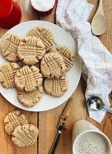

Peanut Butter Cookies

For when your sweet tooth is screaming but your pantry is bare
Ingredients
- 1 cup peanut butter (creamy works best)
- 1 cup sugar
- 1 large egg
steps
- Mix: Preheat your oven to 175°C (350°F). Stir all three ingredients together in a bowl until smooth.
- Scoop: Roll into small balls (about 1 inch) and place on a baking sheet.
- Cross-hatch: Use a fork to press a criss-cross pattern into the top of each ball (this flattens them).
- Bake: Bake for 10-12 minutes. Let them cool completely—they'll be fragile while hot but will firm up into chewy perfection.